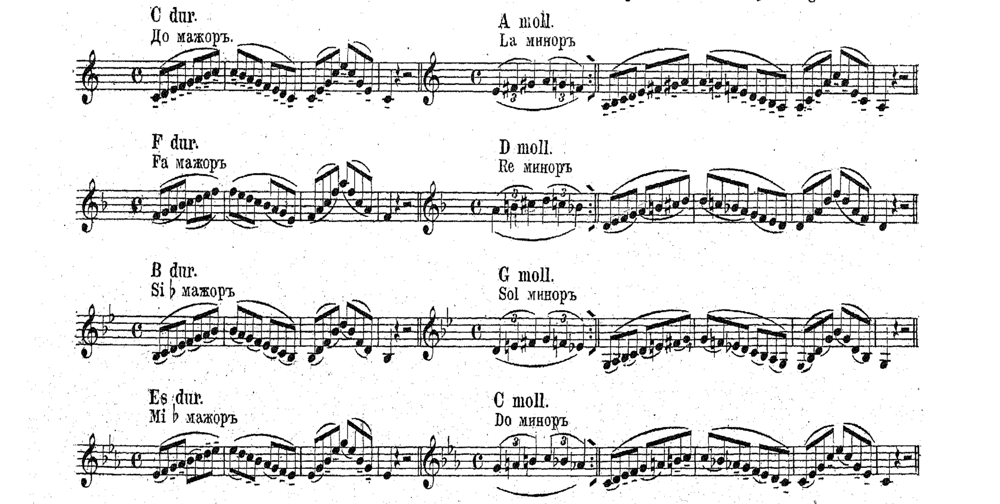
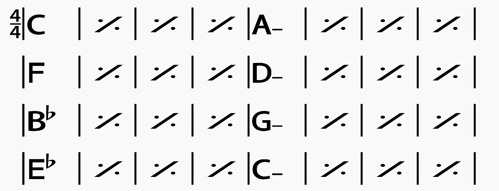
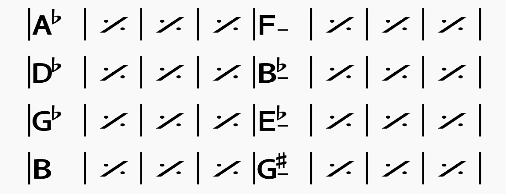
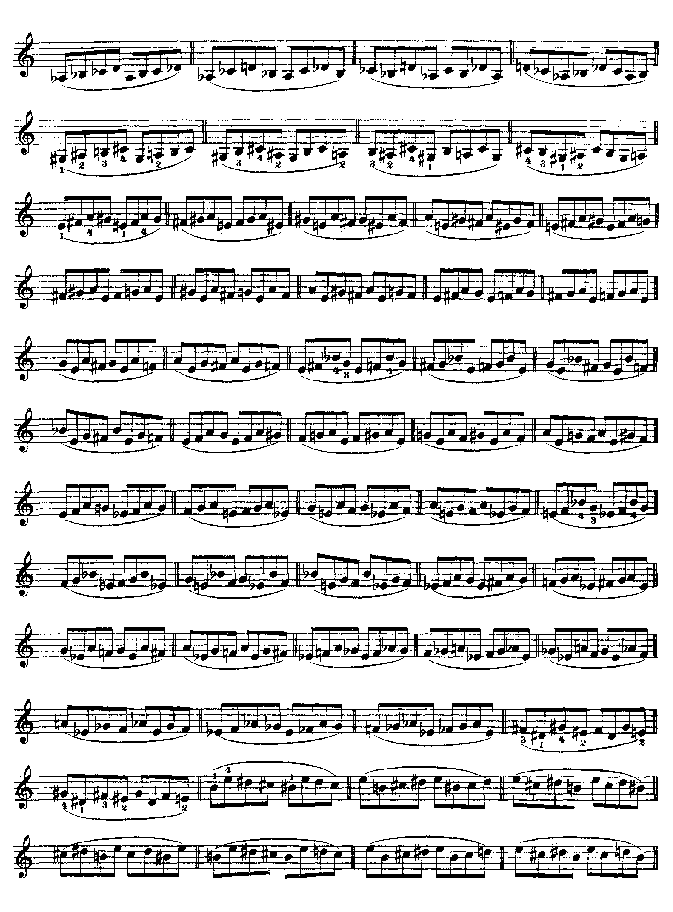
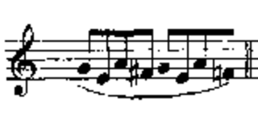

Classical Scale Work and Improvisation
Tom Ed White
Created: 2018-11-12 Mon 14:35
Introduction
Play anything that pops into your head.
Play anything you hear.
Without thinking, the same way that you talk.
Me
I am a musician who performs a lot in the community where I live, in multiple genres.
Common questions?
Can I do this?
Yes we can
A paradox
It comes naturally to everyone
But it takes time
Immerse yourself in a musical community
There is no substitute for making friends.
Self study
Ideas about exploring on your own.
Is improvisation for me? Self study can help determine that.
Let's play some scales from Hřímalý!

Hřímalý without the melodic minor
Hřímalý without the notes

Excerpt C to Eb

Excerpt Ab to B

Ševčík patterns

Ševčík excerpt

Miguel Atwood-Ferguson
Bartok excerpt
Make up a pattern
Conclusion
You can memorize the circle of fifths, and become completely comfortable with jumping around the circle.
Get comfortable with playing through the circle with various scale and phrase patterns, without thinking about key sigs.
Make things up; fool around; have fun.
It's a natural but long process, like learning a foreign language.
Total fluency is a lifelong goal.
If you are participating in a musical community, your rate of progress will skyrocket.
Next steps
Song forms
Navigate a song without measure numbers or sections designated by letters. Learn songs efficiently, using standard forms as a departure point.
Basic modality and chord symbols
Get fluency in the five additional diatonic modes, in addition to major and minor.
Chord shapes and forms on violin, viola, and cello
80% of playing is supporting other players, 20% is soloing.
Solfege
Find your voice
Resources
This presentation:
https://wtomed.github.io/scale-improv
Please feel free to use it as you see fit, and send me suggestions.